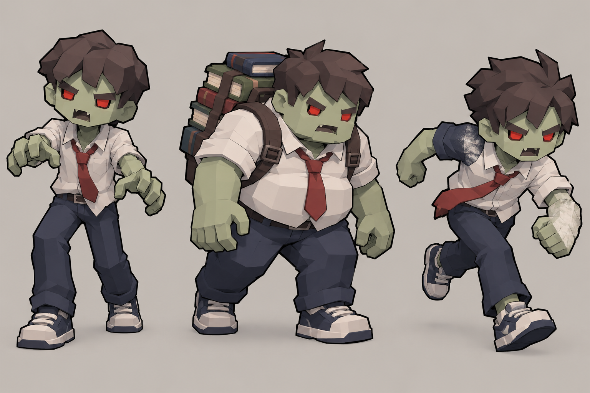
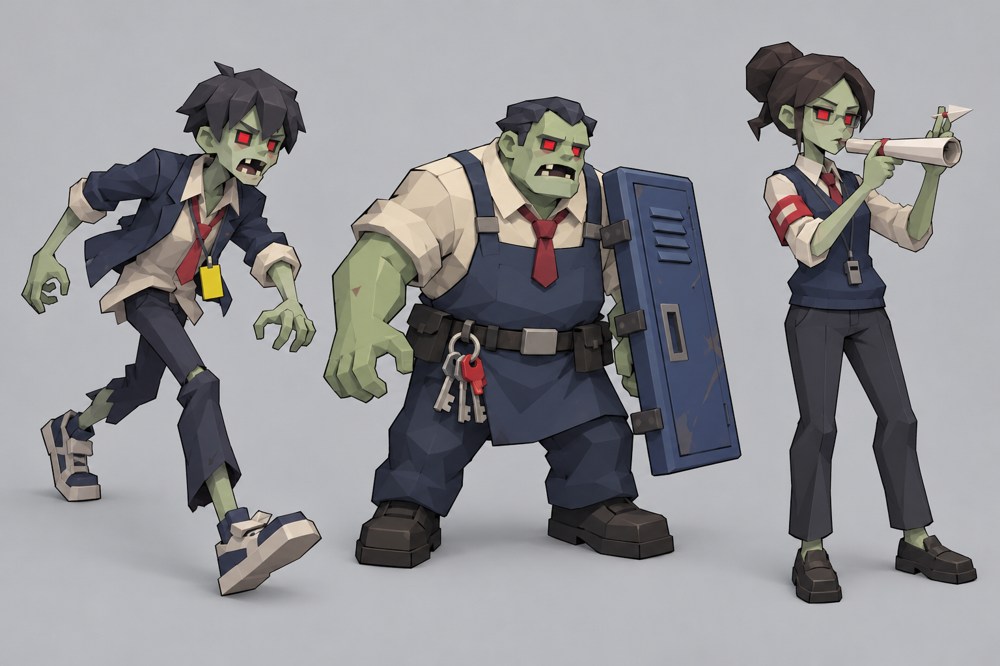
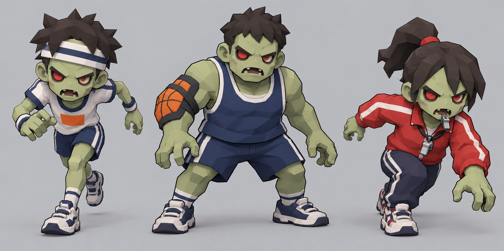
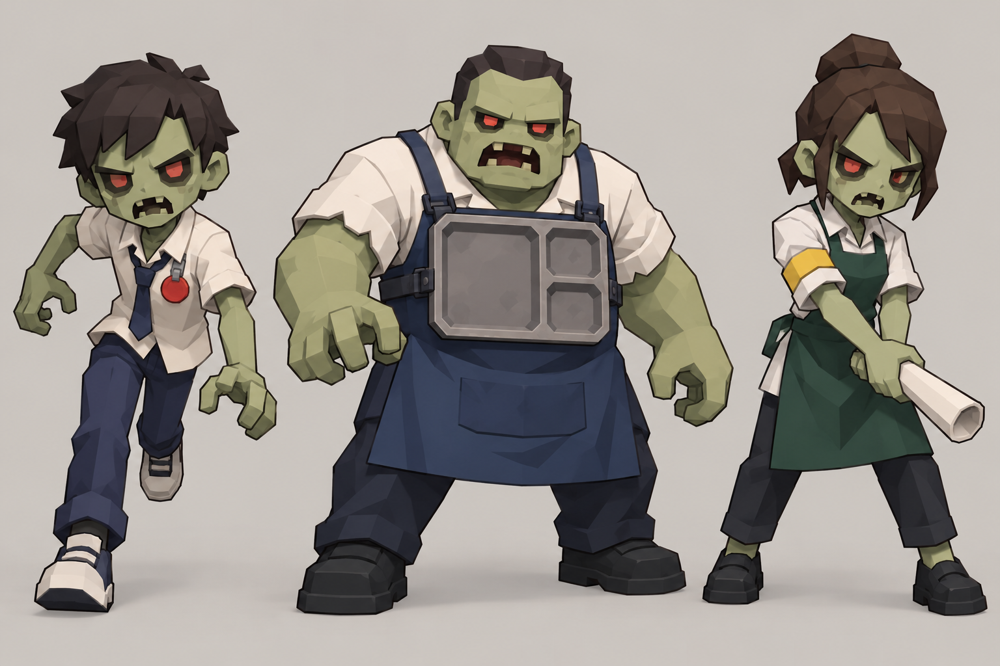

ESCAPE! ZOMBIE SCHOOL · CONCEPT PLAN
Stage 1–4 스테이지별 좀비 콘셉트 기획
작성일: 2026-10-23 상태: 기획 제안 및 콘셉트 원화. 런타임 반영·스탯 승인·모델 제작 완료를 뜻하지 않는다.
기획 기준
현재 코드에서 쓰는 좀비의 전투 역할과 표현 방식을 먼저 확인하고, 각 스테이지의 장소와 플레이 압박을 캐릭터의 실루엣·복장·소품에 반영했다. 스테이지마다 3종, 총 12종이다. 새 능력이나 숫자를 발명하지 않고, 이미 동작 중인 기본 추격·러너·탱커/엘리트·원거리·차저 중 하나를 참고 역할로만 연결한다. 아래 E 코드 연결은 행동 문법을 설명하기 위한 참고이며, 새 좀비에 그 ID나 전투 수치를 확정 배정한 것이 아니다.
실제 공통 구현 흐름은 시각 구현 방식 기록에 정리했다. 핵심은 기존의 챔퍼 박스 파츠, 공용 툰 재질·외곽선, 어깨·골반 피벗, 역할별 기존 애니메이션과 인스턴스 경로를 그대로 이용하는 것이다. 원화는 외형 아이디어를 읽기 위한 그림이며 게임 모델·텍스처·리깅 결과물이 아니다.
스테이지별 콘셉트
Stage 1 — 교실 생존
현재 이름은 교실 생존이다. 교실에서 기본 추격과 밀도, 빠른 적, 탱커, 차저·거대 적의 조합으로 생존 압박을 만든다. B01 수학 교사는 보스이므로 이번 일반 좀비 3종에는 포함하지 않는다.

| 콘셉트 | 참고 행동 | 실루엣·외형 |
|---|---|---|
| 지각생 추격 좀비 | 기본 추격 E01 | 느슨한 셔츠와 비뚤어진 넥타이, 한쪽으로 기운 사각 머리. 팔을 앞으로 내민 익숙한 학생 실루엣으로 기본 접근 위협을 읽게 한다. |
| 책가방 벽 좀비 | 탱커 E02 | 상체는 넓고 단단한 한 덩어리로 유지한다. 책을 낮게 묶은 가방을 등에 붙여 무게를 표현하고, 책이 몸 주위를 떠다니거나 방패처럼 충돌을 막는 인상은 피한다. |
| 분필 돌진 좀비 | 차저 E05 | 몸을 진행 방향으로 숙인 학생. 소매와 신발에 짧은 분필 가루색 포인트를 두어 차저 실루엣을 강조한다. 분필 가루는 장식이며 별도 장판·공격 효과가 아니다. |
Stage 2 — 복도 투사체 시험
현재 이름은 복도 투사체 시험이다. 길고 좁은 복도에서 원거리 투사체와 근접 추격이 겹치므로, 달리는 실루엣·통로를 차지하는 몸집·조준 자세를 분명히 나눈다. 기존 경비원 추격 크루와 B02 보스의 외형을 그대로 복제하지 않는다.

| 콘셉트 | 참고 행동 | 실루엣·외형 |
|---|---|---|
| 복도 전령 러너 | 러너 E03 | 가는 재킷과 흔들리는 학생증 끈, 길게 뻗은 한 발로 속도를 읽게 한다. 벽·사물함을 가리는 큰 장비는 붙이지 않는다. |
| 사물함 문 탱커 | 탱커/엘리트 E02 또는 E06 | 넓은 작업 앞치마와 한쪽 팔에 밀착된 사물함 문 조각으로 무게를 표현한다. 문은 장식 파츠이며 가드·밀치기 같은 새 행동을 뜻하지 않는다. |
| 복도 안내문 사수 | 원거리 E04 | 복도 안내 담당 학생의 완장과 말아 쥔 종이 안내문으로 조준 역할을 구분한다. 원화의 종이 다트는 외형 참고일 뿐 현재 투사체의 외형·발사 방식·피해를 변경하라는 뜻이 아니다. |
Stage 3 — 체육관 총력전
현재 이름은 체육관 총력전이다. 체육관 아레나의 전방위·다축 압박과 달리기 크루가 시그니처다. B03 체육 교사는 보스이므로 일반 러너는 학생 선수로 구분하고, 교사 복장·호루라기 보스 실루엣을 복제하지 않는다.

| 콘셉트 | 참고 행동 | 실루엣·외형 |
|---|---|---|
| 릴레이 스프린터 | 런 크루 RZC | 체육복의 짧은 색 띠와 앞으로 쏠린 달리기 자세. 머리 위 장식은 낮고 단순하게 하여 멀리서도 달리기 크루의 낮은 실루엣이 유지되게 한다. |
| 리바운드 탱커 | 엘리트 E06 | 넓은 민소매 체육복과 한쪽 어깨의 공 무늬 보호대. 공·보호대는 한두 개의 저폴리 파츠로 몸에 고정하며 실제 공을 던지거나 튕기는 행동은 추가하지 않는다. |
| 출발선 차저 | 차저 E05 | 학생 선수의 붉은 트랙 재킷과 낮은 출발 자세. 장식 끈이나 호루라기는 작은 부속으로만 쓰고, B03 체육 교사의 체형·복장·얼굴 디자인과 분리한다. |
Stage 4 — 급식실 대탈출
현재 이름은 급식실 대탈출이며 현재 런타임 보스는 B04 주방장이다. 원거리 E04의 공간 압박과 기존 차저·근접 추격을 시각적으로 읽게 한다. 일반 좀비는 주방장 보스의 모자·주방장 복장·얼굴을 반복하지 않는다.

| 콘셉트 | 참고 행동 | 실루엣·외형 |
|---|---|---|
| 배식줄 러너 | 러너 E03 | 교복 셔츠와 작고 둥근 급식표 장식, 좁은 팔 휘두름과 긴 보폭으로 표현한다. 음식이나 소품을 던지지 않는다. |
| 식판 운반 탱커 | 탱커/엘리트 E02 또는 E06 | 짙은 배식 앞치마와 몸통에 끈으로 고정된 단일 식판. 식판을 방패처럼 사용하거나 실제 충돌 판정에 연결하지 않는다. |
| 급식표 사수 | 원거리 E04 | 급식 담당 학생의 앞치마와 말아 쥔 메뉴 종이로 조준 역할을 표시한다. 종이는 시각 소품이며 새로운 음식 투사체·상태이상·장판을 제안하지 않는다. |
기존 구현과 연결할 때 지킬 점
- 역할은 기존 동작을 빌린다. 새 패턴, 공격 판정, 상태이상, 이동 규칙, 웨이브·스폰 수, HP·속도·피해·보상 수치를 추가하지 않는다.
- 현재 E 타입은 스테이지 간 공유될 수 있다. 기존
E03이나E04의 공통 외형만 바꾸면 다른 스테이지도 바뀔 수 있으므로, 스테이지 한정 외형은 ID·렌더 경로와 저장·Studio 연결을 함께 설계하는 별도 구현 결정이 필요하다. 이 문서는 새 ID를 정하지 않는다. - 신규 ID가 추후 승인되면 타입 코드·런타임 슬롯·팔레트·인스턴스 파츠·애니메이션·Studio 연결과 대응 테스트를 빠짐없이 함께 검토한다. 별도 파츠를 추가해도 공용 형태·재질·외곽선·피벗 원칙을 유지한다.
- 원화에 있는 머리카락 결, 천 주름, 질감과 작은 소품은 그대로 모델링하라는 지시가 아니다. 게임에서는 사각 머리·몸통·팔·다리의 큰 면과 결합된 어깨를 유지하고, 실루엣을 가리는 세부를 덜어낸다. 내부가 비치거나 파츠가 몸에서 떨어져 보이는 형태는 사용하지 않는다.
- 현재 Stage 4를 옥상으로 고르는 낡은 제안은 활성 콘셉트로 취급하지 않았다.
Planner/stage4_concept_wave_plan_2026-07-18.md는 당시 옥상을 권고했지만 현재stageConfig.js와 2026-10-19 고정 Stage 04 문서는 급식실을 가리킨다.
확인한 기준 문서·코드
- 현행 Stage 1–4 제목:
Developer/r3f_prototype/src/lib/stageConfig.js:22-106. - 스테이지별 고정 구현 스냅샷:
Planner/stage1_10_balance_implementation_20261019/stage01.md–stage04.md. 이 문서는 생성 시점의 스냅샷이므로 실제 현재 동작 수치는 코드와 다를 수 있다. - 역할·수치의 현재 기준:
Developer/r3f_prototype/src/components/Enemy.jsx:341-371. - 일반 좀비 팔레트와 메시 구성:
Developer/r3f_prototype/src/components/ZombieMesh.jsx:21-35,356-368,1089-1140. - 인스턴스 파츠·팔레트 경로:
Developer/r3f_prototype/src/components/ZombieInstanceLayer.jsx:14-50,194-200. - 타입 코드·이름 레지스트리:
Developer/r3f_prototype/src/lib/enemyEntityPool.js:7-45. - 스테이지별 버스트 연결:
Developer/r3f_prototype/src/lib/burstEvents.js:138-288. - 캐릭터 그래픽 원칙:
Graphic_designer/Concept_Rules/stage_graphic_cons.md.
원화 파일
제작 방법과 해시를 포함한 파일 목록은 콘셉트 원화 기록을 참고한다. 네 이미지는 모두 기획용 시트이며 게임에 자동 포함되거나 런타임 캐릭터를 바꾸지 않는다.